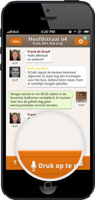

The app focusses on the exchange of information via speech to increase the ease of use for construction workers and STIHO employees. However, the users can also send text messages, images and videos to better illustrate the problems encountered on-site or when providing solutions.